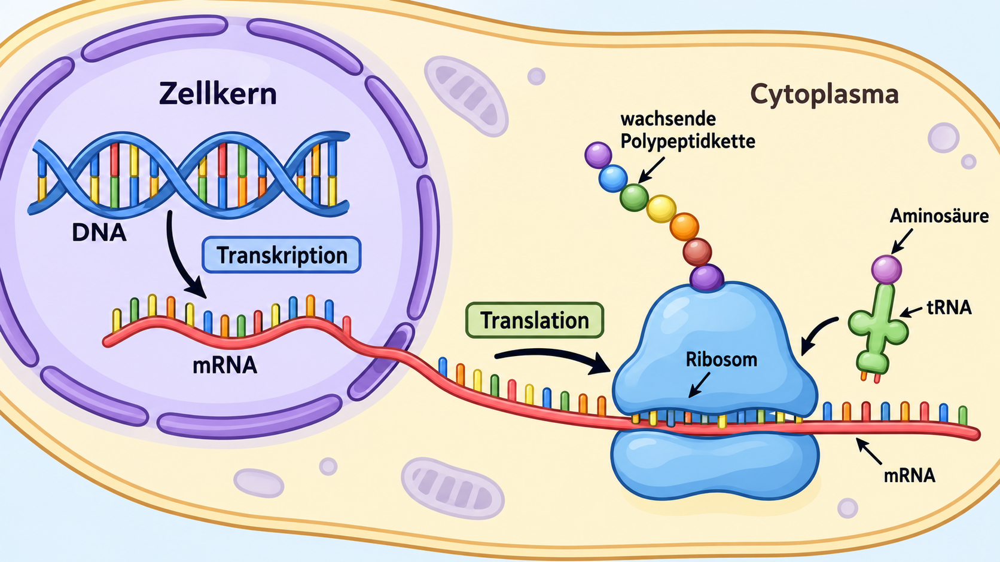

Proteinbiosynthese erklären
Lernziel-ID 475eebb4-4eb0-524f-b1ec-4a672bf856d2

Lernzielbeschreibung
Die lernende Person kann den Informationsfluss von einer gegebenen DNA-Sequenz über mRNA zu einem Polypeptid modellhaft darstellen und die Verbindung von Transkription und Translation erklären.
Direkte Vorbedingungen
Keine
Wird direkt vorausgesetzt von
Vorbedingungen außerhalb dieses Buchs
Direkt aufbauende Ziele außerhalb dieses Buchs
- Sek-II-Abschlussaufgaben Biologie bearbeiten
1cfb2f8b-d44b-57f4-aae0-c5d9f55a1c6a - Tumorsuppressor zwischen Promotormethylierung und Zellzyklus
3ac1cbb1-a366-5ae5-85c0-76b08270869d - Operonsteuerung zwischen Nährlösung und Enzymaktivität
f9637b40-93c1-5603-86e5-3d85b52d01fd - Genaktivität steuern
7975e43b-1187-5ae3-a1ab-282fc3c0548c - Genmutationen analysieren
ffef97e3-12d6-5090-9816-46ab9e57fae2 - Transkriptionsfaktoren bei Eukaryoten erklären
946ce2e7-c30d-5670-839d-003b0619c284 - DNA-Methylierung bei Eukaryoten erklären
0ac51522-352c-50d1-8b95-8d3992b4db15 - Gentherapie prinzipiell erklären
3891b735-9d0d-5eef-b653-6ad58b9181f6